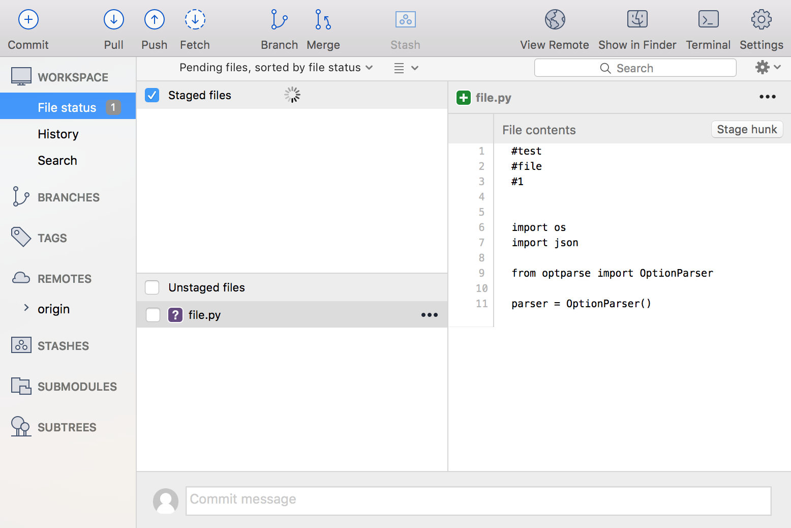
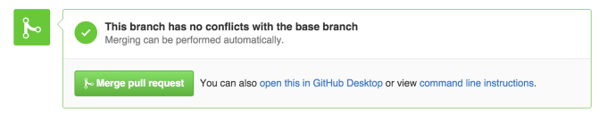

- To create a new repository
- In the upper right corner, next to your avatar or identicon, click and then select New repository.
- Name your repository
- Write a short description.
- Select Initialize this repository with a README.
Step 1. Create a Repository

A repository is usually used to organize a single project.
Repositories can contain folders and files, images, videos, spreadsheets,
and data sets – anything your project needs. We recommend including a README,
or a file with information about your project. GitHub makes it easy to
add one at the same time you create your new repository. It also offers
other common options such as a license file.
Your hello-world repository can be a place where you store ideas, resources,
or even share and discuss things with others.

Step 2. Create a Branch
Branching is the way to work on different versions of a repository at one time. By default your repository has one branch named master which is considered to be the definitive branch. We use branches to experiment and make edits before committing them to master. When you create a branch off the master branch, you’re making a copy, or snapshot, of master as it was at that point in time. If someone else made changes to the master branch while you were working on your branch, you could pull in those updates.
- This diagram shows:
- The master branch
- A new branch called feature (because we’re doing ‘feature work’ on this branch)
- The journey that feature takes before it’s merged into master

Step 2. Create a Branch
Step 3. Make and commit changes
Bravo! Now, you’re on the code view for your readme-edits branch, which is a copy of master. Let’s make some edits.
On GitHub, saved changes are called commits. Each commit has an associated commit message, which is a description explaining why a particular change was made. Commit messages capture the history of your changes, so other contributors can understand what you’ve done and why.
Make and commit changes
Click the README.md file.
Click the pencil icon in the upper right corner of the file view to edit.
In the editor, write a bit about yourself.
Write a commit message that describes your changes.
Click Commit changes button.
commit
These changes will be made to just the README file on your readme-edits branch, so now this branch contains content that’s different from master
.
- Click the Commit button at the top to commit the file.
- In the message box, enter a commit message.
- Click the Commit button under the box. You can now see your change under the History tab.
- From Sourcetree, click the Push button to push your committed changes.
- Under the Push? column from the dialog box that appears, select the branch where you want to push the change and click OK .
Step 3. Merge your Pull Request
Merge on GitHub

In this final step, it’s time to bring your changes together – merging your readme-edits branch into the master branch.
Click the green Merge pull request button to merge the changes into master.
Click Confirm merge.
Go ahead and delete the branch, since its changes have been incorporated, with the Delete branch button in the purple box.
Merge in SourceTree
.png)
- If a feature branch is behind master, you can sync that branch, using a merge, into your feature branch.
- (On macOS) From the left-side menu, hover your mouse over the right side of the Branches label until you see the word Show. Click Show to expand the list of branches.
- Under Branches, double-click the feature branch that is behind to switch to that branch.
- Click the Merge button.
- From the popup that appears, select the commit you want to merge into your feature branch.
- Check the Create a commit even if merge resolved via fast-forward option at the bottom.
- Click OK.
- Your feature branch now has the same commits as your master branch.